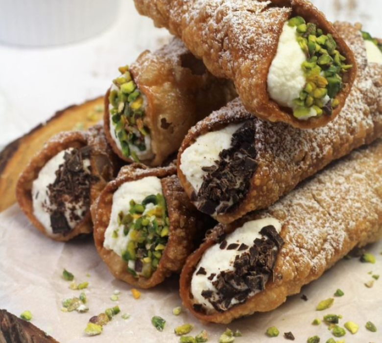

Cannoli:
- 300 gr di farina 00
- 30 gr di zucchero
- 1 uovo
- 1 cucchiaino di cacao in polvere
- 30 gr di burro fuso o strutto
- 2 cucchiai di Marsala
- 50 ml di vino bianco secco
- 1 albume d'uovo
- 1 pizzico di sale
- olio extravergine d'oliva qb
- 1 l di olio di arachide per friggere
- 500 gr di ricotta di pecora
- 180 gr di zucchero a velo/li
- 2 cucchiaini di acqua di fiori d'arancio
- 80 gr di canditi di arancio e cedro a dadini
- 50 gr di gocce di cioccolato
- ciliegie candite qb
- zucchero a velo qb
- cioccolato fondente a scaglie qb


Procedimento:
- Iniziate la preparazione dei cannoli formando una fontana di farina su una spianatoia. Mettete al centro lo zucchero, il cacao in polvere, un pizzico di sale, il burro (o lo strutto) fuso e l’uovo. Impastate il tutto aggiungendo il Marsala e il vino bianco, fino ad ottenere un impasto elastico, aggiungendo ancora poco vino solo se necessario. Formate una palla con l’impasto, avvolgetela con una pellicola e lasciatela riposare in frigo per almeno mezz’ora.
- Mescolate la ricotta con lo zucchero lavorandoli molto bene fino ad ottenere una soffice crema. Aggiungete qualche goccia di acqua di fiori di arancio, i canditi e le gocce di cioccolato, mescolate il tutto e mettete il composto in frigorifero a riposare per 30 minuti.
- Riprendete la pasta, stendetela su un piano infarinato in una sfoglia molto sottile (4mm) e ricavate tanti dischi di circa 10 cm di diametro. Questi dischi vi serviranno per realizzare i cannoli. Allungateli leggermente fino ad ottenere una forma ovale.
- Spennellate i bordi dei dischetti con dell’albume leggermente sbattuto e arrotolateli sui cannelli da cannolo appositi già unti con olio di oliva. Fate aderire bene la pasta al cannello, premendo con le dita, affinché il cannolo non si apra in cottura
- Friggetene solo un paio alla volta in abbondante olio di semi di arachide alla temperatura di 180°. Dovete friggerli con tutto il cannello utilizzato per mantenere la forma. Quando si saranno dorati su tutti i lati, toglieteli dall’olio con un mestolo forato e lasciateli scolare su carta assorbente dall’olio in eccesso. Una volta che si saranno intiepiditi togliete i coni
- Riempite i cannoli con il ripieno alla ricotta utilizzando una tasca per dolci senza bocchetta. Alla fine decorate un lato con le ciliegine candite e l’altro con la granella di cioccolata